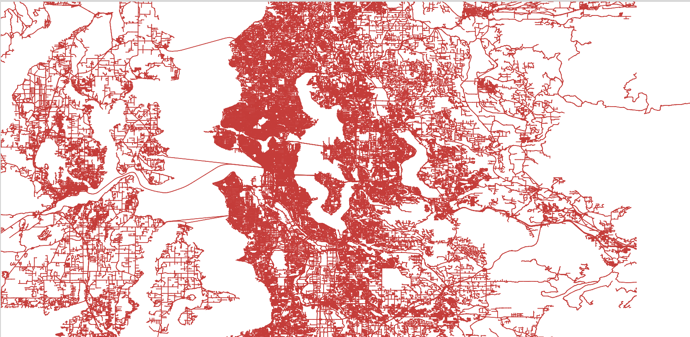
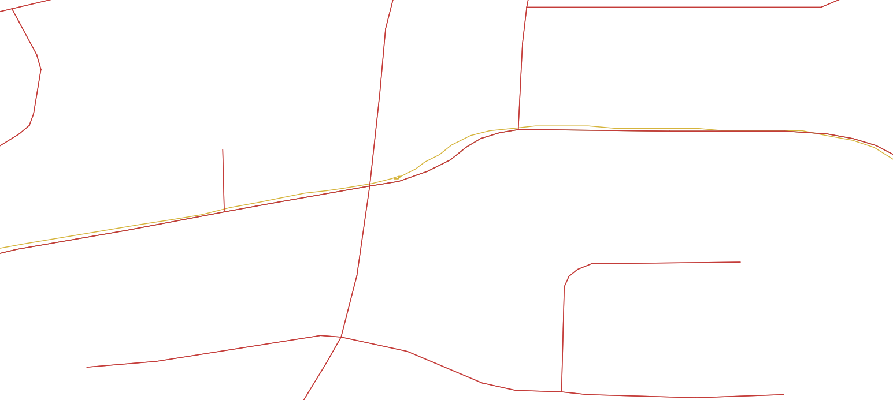

Visualize Atomic Files¶
Here, we present how to visualize atomic files with the help of a VisHelper in LibCity.
Prepare Atomic Files¶
To begin with, simply place the atomic file in the ./raw_data folder, which is the same as the preparation of running a model. If you don’t know where to get a dataset, click here for more information.
Run the Visualization Script¶
To simplify user operation to the most extent, there are only two parameters to be specified:
dataset: the name of the datasetsave_path: the path to save visualization files,default="./visualized_data/"
The script will automatically detect the geo file and dyna files in the dataset folder and convert them to GeoJSON files. (For all datasets, make sure that (1) there’s only one geo file and (2) there’s at least one file with coordiantes column.)
For example, if you are running a map matching task on Seattle dataset, you can use the following command
python visualize.py --dataset Seattle --save_path "./visualized_data"
to start a data type conversion.
The grid dataset and the state dataset can be visualized in the same way. It is worth noticing that the properties (inflow and outflow for example) are averaged over the full time period in grid dataset and state dataset.
Visualize GeoJSON¶
GeoJSON is a format for encoding a variety of geographic data structures and is supported by most GIS tools. Here, we present our visualization of Seattle dataset using QGIS.
The red lines represents the road network of Seattle. The yellow lines represents GPS trajectory of the Seattle dataset.


We also present our heat map visualization of METR_LA which is a traffic speed dataset.